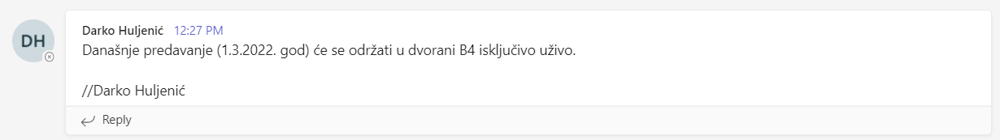

Trebamo doći danas uživo na predavanje ili će biti preko Teamsa?
Artemis ja sam skuzio da ce bit preko teamsa, iako nisu nist rekli ali nezz za kaj bi nam teams sluzio inace… Ak nije prek teamsa onda malo bed jer nisam u zg😅
update: 1. predavanje je uzivo  kolki je bed ak ne dodemo hehe
Može netko potvrditi jesu predavanja obavezna ili nisu, jel se gleda prisutnost ili jel ima prag na onih 10bodova iz predavanja?
Daeyarn gleda se prisutnost na način da se potpisuješ na popis i još predaješ potpisani papir na koji odgovaraš na pitanja s predavanja (ne gleda se točnost odgovora nek čisto da se vidi da pratiš)
mislim da nema praga, ali nek još neko potvrdi
[obrisani korisnik] aa znaci predavanja su obavezna, treba se potpisivati 😭
Daeyarn na feru su sva predavanja obavezna 😀
Gdje su nam dane teme za seminar?
VolimStopala🇻🇦🇭🇷 https://www.fer.unizg.hr/predmet/iut/materijali#%23!p_rep_121963!_-204255-204258
Jučer na predavanju tek spomenuo. Prvi dio zadatka je zadan, drugi dio će tek biti. Prvi+drugi zajedno moraju imati 4000 riječi
Što je danas rekao za esej i međuispit?
std::popcount meduispit - pise se online od doma, 10 abcd pitalica bez negativnih u trajanju 5 minuta i 3 esejska u trajanju 25 minuta esej - prokomentirao malo drugi zadatak i dao nam je hint za prvi zadatak da hrvatska nije bas dobra po pitanju inovacija i da bi se zato trebala vise fokusirati na disruptivne inovacije(jer za odrzive inovacije treba imat inovacije koje su vec dobre i vrijedne odrzavanja)
Daeyarn a jel se zna sta jel ZI isto online? također jel netko pitao kako će rok iz ovog izgledati?
Kad misle objavit rezultate MI-a zna li netko?
Jel moramo napisat i prvi i drugi dio seminara il mogu proci samo sa prvim?
BigZ1 rekli su da ce izgledati isto kao i mi, za rok ne znam
kako ce podijeliti onih 10 bodova iz aktivnosti? jel ce to gledati na temelju prisustva na irl predavanjima i/ili aktivnosti na teams predavanjima
Ak sam dobro shvatio, oboje. Al ne kužim baš kak misle to izvest, a da bude pošteno
DukeFiction prošle god su samo rendom dali